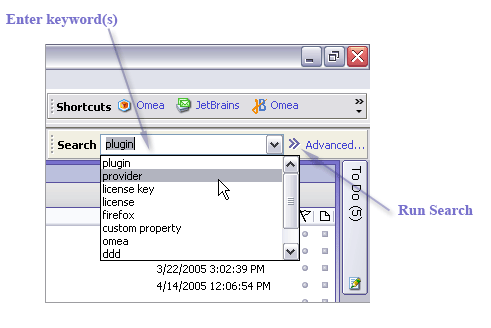
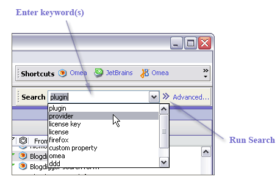

Using Basic Search
The Basic Search feature finds content in multiple resource types that contains one or more keywords. Simply type into the search box the keyword(s) you want the found resource(s) to contain and click the Run button.


Basic Search
Omea will quickly find all resources with the corresponding keyword(s) and highlight the keyword(s) in the Preview pane.
Next Search Result and Previous Search Result
Once your search in Omea resulted in several entries of the word or phrase you searched for, you can now easily navigate between the results which your search returned. All you need to do is to
- enter the word or phrase to search for and then
- select the item which contains the entries of search keywords in the Items List
- and browse to the item body in the Preview pane.
The search entries in the item body will be highlighted and you can move to the next and previous search result pressing F3 (Next Search Result) and Shift+F3 (Previous Search Result) respectively.
Tips and Tricks
- You can focus Basic Search by choosing Search | Basic Search on the Main menu, or pressing Ctrl + E.
- Pressing Enter after typing in a keyword runs Basic Search.
- The Search box keeps track of the last several keywords you entered for Basic Search. You can later repeat the keyword search by picking one of the keywords from the list (see figure above).
- You can use query syntax along with the keywords you enter in Basic Search. For information, see Reference: Search Query Syntax.
- Use Advanced Search to limit the types of resources you want to search.
- Right-click any item in the resource pane — a feed in Feeds pane, a newsgroup in Newsgroups pane, and so on — and select Search in this Feed… and Search in this Newsgroup… respectively and enjoy the possibilities of Advanced Search.